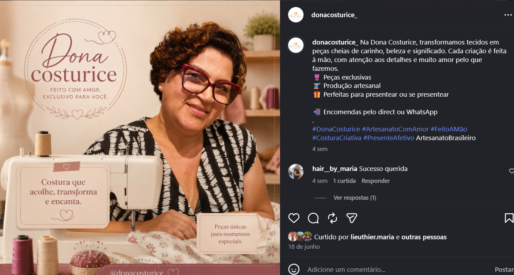

Feito à mão, especialmente para você
Costuras que levam afeto para a sua rotina.
Peças artesanais com acabamento caprichado, tecidos de qualidade e a delicadeza de uma criação personalizada.
✦ Pequenas produções, grandes detalhes
com carinho
Feito à mãoCada peça é única
Tecidos escolhidosQualidade em cada detalhe
PersonalizávelDo seu jeito, para você
Produção afetivaDa nossa casa para a sua
Escolhas cheias de carinho
Peças para viver e presentear
Encontre beleza e praticidade em criações que deixam o cotidiano mais acolhedor.
Carregando costurices…
Seu nome.
Suas cores.
Sua peça.
Criado com você
Uma costurice para chamar de sua
Você escolhe a peça, conta suas preferências e nós cuidamos de cada ponto. Cores, tecidos, bordados e nomes transformam sua encomenda em algo verdadeiramente especial.
- 1Escolha a peçaConte o que você deseja.
- 2Defina os detalhesCombinamos tecido, cor e personalização.
- 3Receba o seu afetoProduzimos à mão e enviamos para você.

Nossa história
“A Dona Costurice nasceu de um desejo enorme de aprender a costurar.”
Esse desejo virou aprendizado, e o aprendizado ganhou forma em peças artesanais feitas à mão. Hoje, cada criação carrega acabamento caprichado, tecidos de qualidade e a possibilidade de personalização.
Nossa missão é levar praticidade e beleza, aconchego e afeto aos clientes que chegam e logo se tornam amigos.
Dona Costurice afeto em forma de costuraVamos costurar uma ideia?
Conte o que você imaginou.
Será um prazer transformar sua inspiração em uma peça feita especialmente para você.